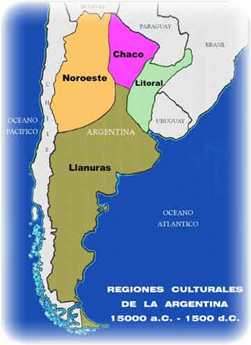

Territorio
El territorio comprende una porción de superficie terrestre sobre la que un Estado ejerce plena soberanía, porque tiene la autoridad necesaria para asegurar el cumplimiento de las leyes. La República Argentina reconoce como propio un espacio terrestre que ocupa una superficie total de 3.761.274 km². A su vez, cuenta con cuatro regiones distintas:
Litoral
La Región del Litoral comprende la zona del territorio argentino formada por las provincias de Misiones, Corrientes y Entre Ríos (que a su vez forman la Mesopotamia argentina) y la zona de las provincias de Formosa, Chaco y Santa Fe que están cerca de los ríos Paraná y Paraguay.
Esta región histórica y cultural está comprendida por las costas y zonas cercanas al Río Paraná, Río Paraguay, Río Uruguay y las islas del Delta del Paraná ubicadas en Entre Ríos y el más extremo norte de la Provincia de Buenos Aires.
Su gentilicio es litoraleño. Fitogeográficamente corresponde a las selvas de la provincia fitogeográfica Paranaense que se transforman en sabanas y bosques xerófilos hacia la región central y sur.
Chaco
La región chaqueña argentina es una de las regiones geográficas de la República Argentina.
Sus límites son el río Pilcomayo al norte, los ríos Paraguay y Paraná al este, el río Salado al sur y la región Norte al oeste.
Abarcaba originalmente la mayor parte de las provincias de Santiago del Estero, Jujuy, Chaco, Formosa, norte de Santa Fe y este de Salta.
De modo ecotónico abarca el norte de Córdoba y este de Tucumán, y aunque el bioma cambie mucho —especialmente en lo climático— gran parte de los botánicos incluyen en la formación chaquense a las forestas del norte de la provincia de San Luis hasta confundirse al sur y al oeste con la región del Monte Seco.
Geológicamente la región chaqueña constituye una unidad con la Pampasia o llanura pampeana, por lo que se habla de región chacopampeana. Sin embargo, la región chaqueña se distingue de la pampeana por su clima y ecología.
Llanura
La región pampeana es una extensa llanura ubicada al este de la República Argentina, entre los 31° y 39° de latitud sur.
Dentro de esta región es posible trazar una clara separación entre la denominada "Pampa Húmeda" o "Pampa Oriental" y la "Pampa Seca" o "Pampa Occidental" (Politos 1984).
Noroeste
El noroeste argentino (NOA) es una región histórico-geográfica de Argentina, estando integrada por las provincias de: Jujuy, Salta, Tucumán, Catamarca, La Rioja y Santiago del Estero.
Ocupa algo más del 20% del territorio de Argentina.
La región del NOA está fundamentada en consideraciones de índole histórico y geográficas, y se relaciona con la llamada Región del Noroeste Argentino desde 1999, una subdivisión de la Región del Norte Grande Argentino, por lo tanto, la circunscripción política del NOA.